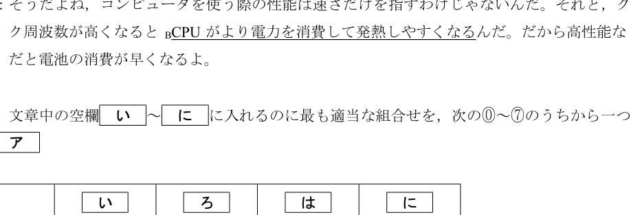

問7：性能指標の選択
ポイント解説
コンピュータの性能は、単一の指標だけでは測れません。特にスマートフォンようなモバイルデバイスでは、処理速度だけでなく、消費電力や発熱も重要な要素となります。この問題は、用途に応じた総合的な性能判断ができるかを問うています。
トレードオフを理解する
CPUの性能には「トレードオフ（一方を立てれば他方が立たない）」の関係が多く存在します。
- クロック周波数: 高いほど処理速度は上がりますが、一般的に消費電力が増え、発熱も大きくなります。
- コア数: 多いほど並列処理能力は上がりますが、これも消費電力と発熱の増加につながります。
問題文の会話では、トシさんはスマートフォンの性能として「充電1回分で動作できる時間」を重視しています。これは、バッテリー駆動時間が重要であることを意味します。
選択肢のプロセッサX, Y, Zを比較すると、
- プロセッサZ: クロック周波数もコア数も最大で、最も処理性能が高いと考えられますが、発熱や消費電力も最も大きいと推測されます。
- プロセッサX: TDP（熱設計電力）の値が最も小さく、これは発熱や消費電力が最も少ないことを示唆します。
したがって、バッテリー駆動時間を重視するノートパソコンやスマートフォンには、TDPの小さいプロセッサXが最も適していると考えられます。